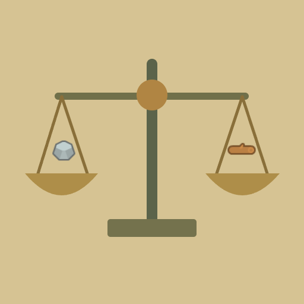

<- all projects

Balance Bureau
PC
Volume
Live
Weigh the mystery. Crack the case.
The Bureau of Curious Measures has a desk full of mislabeled parcels. Help Inspector Pip discover what each object weighs and restore order to the town market. Put objects on the pans of a balance scale, weigh them, record what you learn and name your finding once the evidence leaves only one answer. Some cases ask for exact weights using calibrated reference units, others for the order from lightest to heaviest. A lucky guess is not enough while another answer still fits, and there is no timer. Solve 100 cases across five chapters, plus a daily investigation and 90 optional cases.